The Context
Sky's first TV and streaming platform
Sky had spent decades building its business around a satellite dish. In 2018, a small team of around 10 people were quietly asked to imagine what Sky could be without one. I was one of them.
It was one of the most exciting briefs I've ever been given. We weren't starting from completely nothing — Sky Q and Now TV gave us a base layer to learn from, and we did extensive competitor benchmarking across the streaming landscape to understand what good looked like. But the vision for Glass, the interaction model, the design language, the feel of it — that really did start on a whiteboard.
Concepting started in 2018, over three years before anyone outside the project knew it existed. Top secret. Tight team. Enormous ambition. The hardware, software proof of concept, marketing identity and interface were all being designed and tested in parallel — an unusually integrated way of working that meant design decisions had to hold up across all four simultaneously. That kind of pressure sharpens your thinking very quickly.
Where it started
These are the actual whiteboard sessions from those first weeks. The navigation model, the tile hierarchy, the editorial logic, the homepage structure. Every line on these walls eventually became a screen in someone's living room.
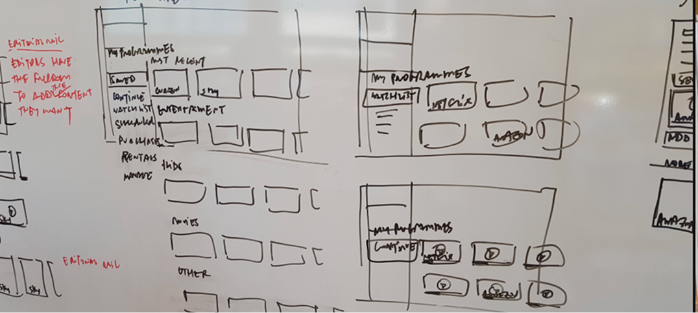
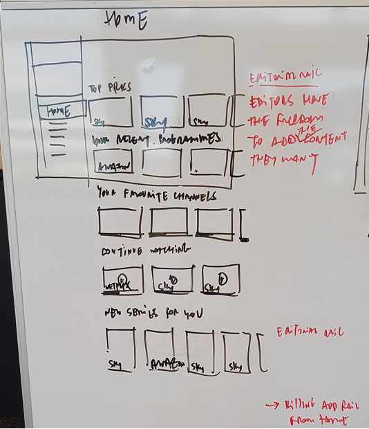
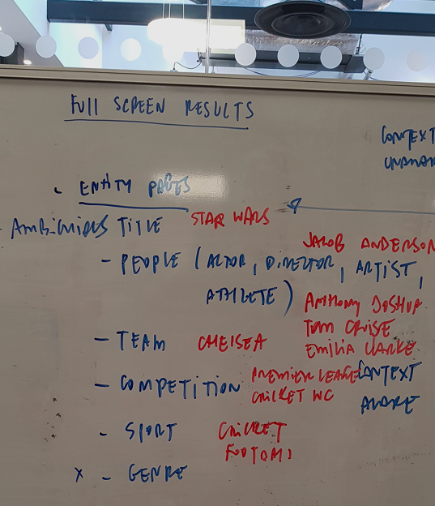
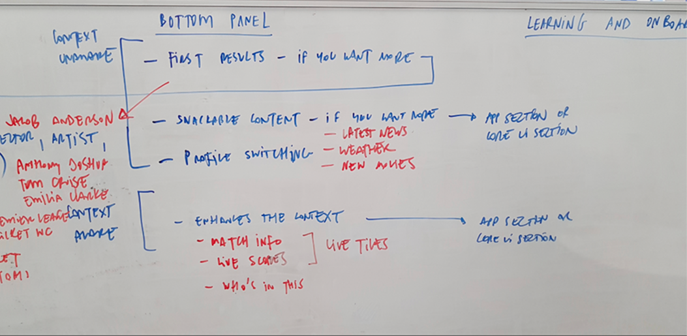
Whiteboard sessions, 2019. The foundations of Sky Glass.
My part in this
In from day one
I was part of the original core team, there from the very first whiteboard sessions through to launch and beyond. My role grew with the project. Early on it was about getting the foundations right — defining interaction principles, navigation models, tile logic. As the team grew I became the person who held the quality bar, onboarded new designers, directed the agency work and made sure the system stayed coherent even as more hands touched it.
Lead Designer
- Led the competitor benchmarking and research that helped frame the design direction, drawing on Sky Q and Now TV as a base while defining what needed to be entirely new
- Created the interaction principles from scratch — the rules for how tiles, rails and navigation behaved, that every designer and engineer on the project would build from
- Designed the Switcher and Glance — two of the most technically complex features on the product, both requiring new interaction patterns we had no reference for
- Worked closely with the motion designer to define the full motion language: curves, timing, z-space behaviour — the details that make an interface feel alive
- Shaped the far-field voice experience at a time when designing for voice on TV was genuinely uncharted territory
- As the team grew, became the person who held the quality bar — onboarding new designers, directing the in-house agency, providing final sign-off on visual treatment
- Named patent holder for the Sky Glass UI design
The Journey
From whiteboard to living rooms worldwide
Seven years. Six phases. One design language that started on a whiteboard and ended up in millions of homes across three continents.
2019
Concepting
Small core team. Open brief. What does Sky look like without a satellite dish? Building interaction principles, tile logic, motion rules and the foundational visual language from nothing.
2019 to 2020
Design maturity
Switcher, Glance, voice control, category rails and navigation patterns. The system taking shape. Design system built and documented. Team growing.
2020 to 2021
Scaling and shipping
A full year of getting the product across the line. Onboarding the wider design team, directing the in-house advertising agency, cinemagraphs, stress-testing, and final engineering handover. Everything it takes to ship.
October 2021
Launch
Sky Glass launches in the UK. Five colourways, three sizes, no satellite dish required. One of the most significant product launches in Sky's history.
The Interface
Principles first, pixels second
Before a single component was designed, we needed the rules. The interaction principles were the foundation everything else was built on: how tiles behave, how rails scroll, how focus moves, how motion communicates state. Get these wrong and the whole system breaks. Get them right and the product feels effortless.
We called the interface Entertainment OS internally, deliberately positioning it as a platform rather than a product. That decision mattered, it shaped how we designed. Every principle, every component, every pattern had to be abstract enough to travel. Not just to work on Sky Glass in the UK, but eventually for partners around the world under the white label name Mosaic.
Navigation was where we spent the most time. We prototyped multiple directions, tested them against real user behaviour, and debated them hard before committing. The videos below show two of those explorations.
Top nav prototype
Vertical navigation concept
Navigation explorations.
One of the most significant conceptual shifts from Sky Q was the move from an XY navigation model to a Z-space interaction model. Sky Q navigated across and up and down. Entertainment OS introduced depth, bringing users into content rather than scrolling past it. This required a completely new motion language, and I worked closely alongside the motion designer to define the curves, timing and spatial behaviour that would make it feel natural.
Every moving part of the interface was documented. Button transitions, focus states, page transitions, rail scrolling, vertical navigation, depth navigation. Each with its own defined behaviour, curve and timing. Nothing left to interpretation.
Button transition
Focus state
Focus and semi-focus
Flat page navigation
Rail navigation
Rail navigation vertical
Page transition
Z-space navigation
Motion navigation guidelines: the full library of interaction behaviours defined for Entertainment OS.
Tile sizes, motion curves, focus behaviour, scroll physics, rail structure, content hierarchy. Every element specified with enough rigour that a growing team and an engineering team could build from them independently and consistently.
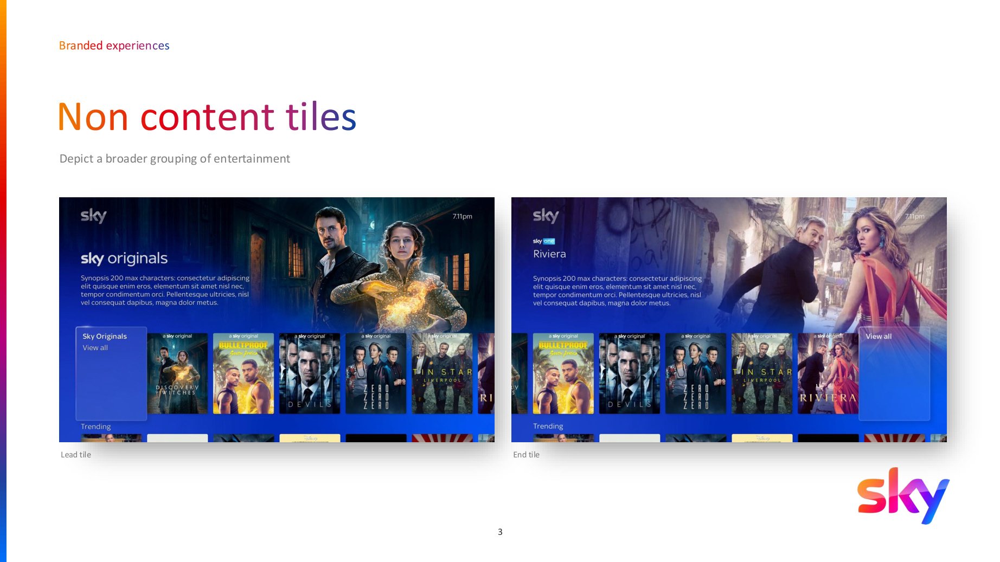
Category rail design: non-content tiles for branded experiences.
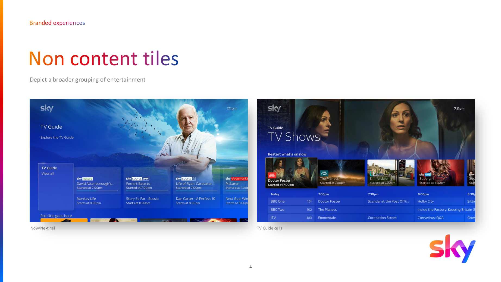
In-page navigation: consistent positioning, UI and interactions across the Now/Next rail and TV Guide.
Key Features
The Switcher, Glance and far-field voice
These were genuinely new problems. The Switcher let customers move between channels with a directional swipe without losing context, deceptively simple to use, surprisingly complex to get right. Glance was a full-screen immersive overlay for browsing content without ever leaving what you were watching.
Far-field voice was the one that really pushed us. Sky Glass listens from across the room, no button press needed. Designing that meant solving feedback, error states, confidence levels and the visual language of a system that responds before you've finished speaking. Genuinely state-of-the-art at the time, and a lot of fun to work on.
Switcher to Glance
Switcher left and right
Far-field voice control: state-of-the-art hands-free interaction from across the room.
Launch
Sky's biggest product launch in a generation
October 2021. After more than three years of work that almost no one outside the team knew about, Sky Glass went on sale in the UK. No dish. No box. Just a TV. The simplest Sky had ever been.
The launch campaign was one of Sky's largest ever, with a reported marketing investment of over £70 million spanning TV, outdoor, digital and in-store. The message was clear: all of Sky, in one screen, no installation required. That scale of spend speaks to how significant this product was to Sky as a business. The response was immediate, and the scale of what we had built began to feel real.
Oct '21
UK launch date. Sky Glass became available to UK customers for the first time, with no satellite dish required
5
Colourways at launch, the first time Sky had offered a consumer TV in multiple colours
3
Screen sizes: 43", 55" and 65", covering every living room from first home to family TV
4+
European markets within 18 months: UK, Ireland, Italy and Germany all live on Entertainment OS
3+
Years of concepting and design before a single product reached a customer's living room
1
Patent for the UI design, the first of its kind for a Sky streaming TV product
.webp)
October 2021
Sky Glass launches in the United Kingdom. Available in five colourways (Ocean Blue, Ceramic White, Racing Green, Anthracite Black and Dusky Pink) across three screen sizes (43", 55" and 65").
The product has since been globally syndicated, with the underlying UI platform forming the basis for Sky's international streaming ambitions.
The product
No satellite dish. No set-top box. Everything integrated into the screen itself, powered by Sky's streaming platform and controlled by far-field voice, a touch remote, or the Sky Glass app.
Sky Glass went on to win multiple industry awards and established a new benchmark for streaming TV hardware in the UK market.
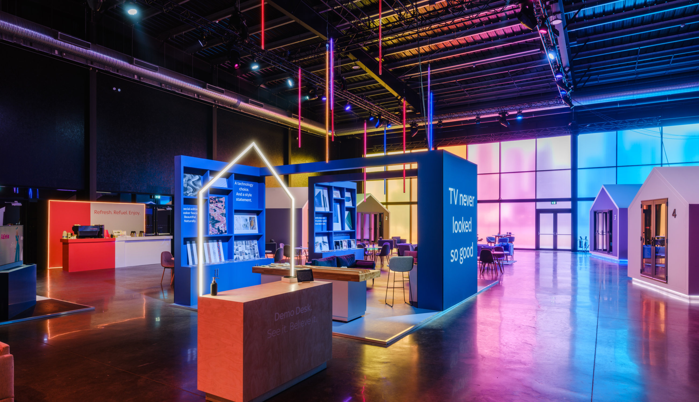
European Expansion
The system starts to travel
The UK was always just the start. Because we had designed Entertainment OS as a platform from day one, not a product, the system was ready to travel the moment the UK launched. Ireland followed in 2022. Then Italy and Germany. Different markets, different languages, different content catalogues, but the same foundational design language underneath, adapting without breaking.
From the start we designed with the future in mind, building a system that could adapt rather than one that would need to be rebuilt for every new market. That said, it was never plain sailing. Expanding into new territories brought real challenges, and the approach evolved along the way. One of the most significant learnings was the adoption of a white label design system with theme layers on top — partner-specific branding, typography and colour sitting above a shared, governed core — allowing each territory to feel native while the system underneath remained consistent and scalable.
October 2021
United Kingdom
Sky Glass launches. First streaming-only Sky TV. No satellite dish. Five colourways, three sizes. One of Sky's most significant product launches.
2022
Ireland
Entertainment OS expands to Ireland. The platform proves its ability to adapt to a new market without a redesign, exactly what the design system was built for.
2022 to 2023
Italy and Germany
Sky Italia and Sky Deutschland adopt the Entertainment OS platform, bringing the interface to tens of millions of European homes across two additional major markets.

Global Scale
Entertainment OS becomes Mosaic
Following a company restructure and Comcast's acquisition of Sky, things stepped up significantly for global reach. Entertainment OS was white-labelled as Mosaic, a design system that any operator anywhere in the world could theme as their own. Xumo in the US. Hubbl in Australia. Rogers in Canada. Each got their own branding, colour palette and identity. Underneath, the same components, the same patterns, the same interaction model we had built from scratch in 2018.
My involvement in this wasn't just overseeing the system. I worked directly with partners including Xumo in the US to help form their brand elements and integrate them into the design system. That meant collaborating with their teams to define their spectrum colours, brand stings, logo usage and visual identity, then building those elements into their own theme layer within the system — controlled and governed centrally by Sky and Comcast design, but expressing each partner's brand authentically on screen.
I created the original component and design system process that connected design, the design system and development to work synchronistically. As the programme scaled, that process became the foundation for a dedicated design system team, a substantial global function coordinating partner themes and maintaining consistency across mobile, tablet, web and TV from two hubs: Osterley, London and Philadelphia, USA.
"A small team on a whiteboard in 2018. Seven years later, one design language powering products across three continents."
Involvement timeline
2018 to 2019
Core concepting
Small team of around 10. Top-secret project. Interaction principles, tile logic, navigation model, motion language. Building the foundations of what would become Sky Glass — more than three years before launch.
2019 to 2020
Feature design
Switcher, Glance, far-field voice, category rails, TV Guide, entity pages. Design system built and documented. Far-field voice, state-of-the-art technology, requiring new interaction patterns from scratch.
2020 to 2021
Scaling and launch
Onboarding the wider design team. Directing the in-house advertising agency on brand expression for the TV interface. Cinemagraphs and visual finesse. Final preparation for launch. Sky Glass goes on sale in the UK, October 2021.
2022 to 2023
European rollout
Entertainment OS expands to Ireland, Italy and Germany. The design system scales across Sky's European territories. Each market localised but all running the same foundational design language built in 2019.
2023 to 2024
Global syndication and Mosaic
Entertainment OS is white-labelled as Mosaic. Each syndication partner receives their own theme: Xumo in the US, Hubbl (Foxtel) in Australia, Rogers in Canada. The design system expands beyond TV to cover mobile, tablet and web. A dedicated design system team is established, operating across Philadelphia and the UK.
2025
A substantial global programme
Sky Glass TV, Sky Glass Gen 2 and Sky Stream all running Mosaic. The design system that started with a small team on a whiteboard in 2018 now powers products across 8+ territories for 6+ global operators, maintained by a substantial international team. The programme also moved to Zeroheight for design system documentation, creating a living, connected source of truth between Figma and development. AI integration into the design system workflow further accelerated efficiency and consistency across the global team. What was once a secret concepting project is now one of the world's most widely deployed TV design systems.
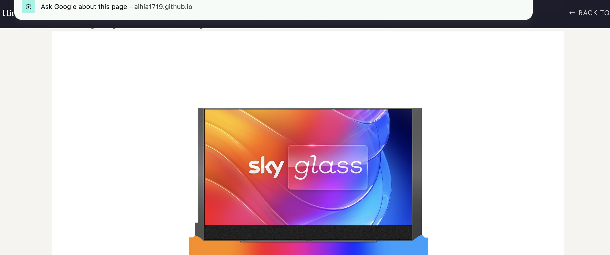
Global reach
One platform. Many products.
Sky Glass TV and Sky Glass Stream in the UK and Europe. Hubbl across Australia. Xumo on Hisense, Element and Best Buy screens across the US. Charter. MultiChoice in South Africa. All of it running the same design system. The theme builder, a Figma-based tool built in-house, gave each partner the ability to brand their own version within guardrails, so they got their identity without breaking the system underneath.
The Mosaic programme runs a substantial and still-growing team across London and Philadelphia, coordinating partner themes, maintaining the component library, and extending the system across TV, mobile, tablet and web. What started as a sketchbook is now a global design infrastructure, and the team continues to scale.
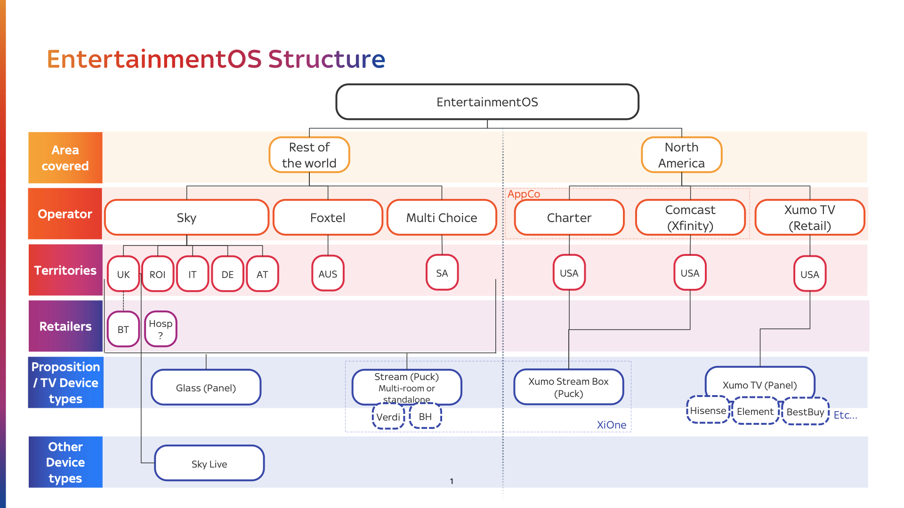
Entertainment OS operator structure: the full hierarchy of operators, territories, retailers and device types the platform serves globally.
6+
Global operators: Sky, Foxtel, MultiChoice, Charter, Comcast (Xfinity) and Xumo TV
8+
Territories: UK, Ireland, Italy, Germany, Austria, Australia, South Africa and USA
2
Design hubs running in parallel: Osterley, London and Philadelphia, USA
Sky
UK · Ireland · Italy · Germany · Austria
Glass TV · Glass Stream · Sky Live
Foxtel · MultiChoice
Australia · South Africa
Hubbl · Stream Puck
Comcast · Charter · Xumo
USA
Xumo TV · Xumo Stream Box · Hisense · Element · Best Buy
What it became
Sky Glass Gen 2 and Sky Stream
Sky Glass Gen 2 arrived with refined hardware and upgraded performance. Sky Stream brought the same Entertainment OS experience to a compact puck, no commitment to a full TV, same design language. Two products built entirely on the system we had designed from scratch. Different form factors. One foundation.
Sky Glass Gen 2
Sky Stream
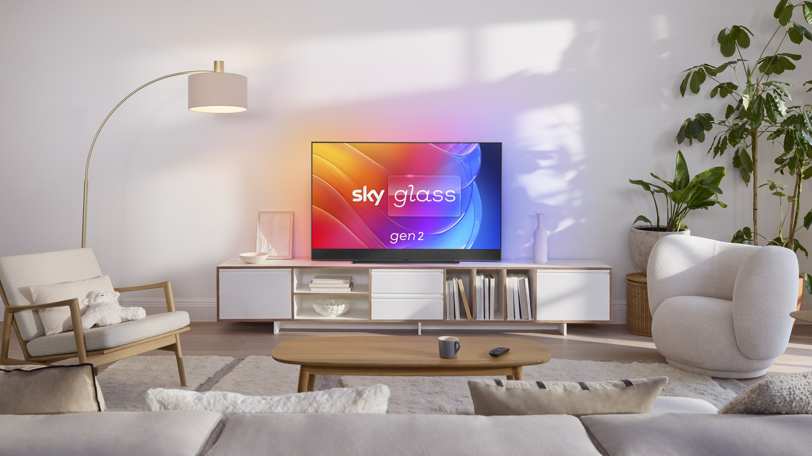
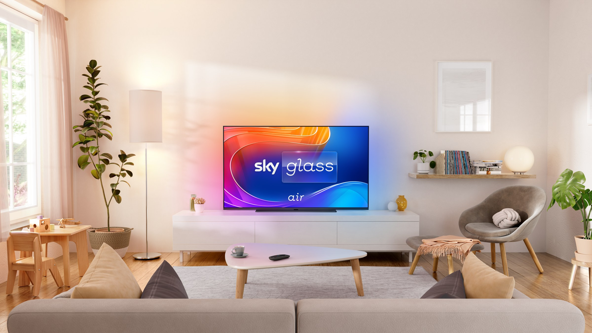
Reflection
What I learned, the hard way
I've worked on a lot of products. This one was different, and not just because of the scale. It was different because of everything that happened around the design work. Company restructures. Rapid team growth. Curveball changes in direction. Tight deadlines that didn't move even when everything else did. This project demanded the ability to flex, to absorb change and keep delivering — and that shaped me as much as any brief ever has.
It wasn't all roses. There were moments where the pace of growth outstripped the process, where decisions that felt solid got revisited, where the ambiguity was genuinely uncomfortable. Looking back, I'd have pushed earlier for clearer governance structures as the team scaled. I'd have formalised the design-to-dev handover process sooner. And I'd have been more vocal about protecting the foundational principles when external pressures tried to erode them.
But those are the learnings that only come from being in the thick of it. The resilience, the ability to lead through uncertainty, the understanding of how design systems actually behave at scale in the real world rather than in theory — I wouldn't have those without every difficult moment this project threw at me.
Sky Glass is still live. The UI I designed still bears my name on the patent. The design system I helped build now powers products across three continents. I feel genuinely proud of every part of it — the polished bits and the messy ones.